Professional Self-Assessment
I am completing the Bachelor of Science in Computer Science at Southern New Hampshire University, and this portfolio is the record of what I can build. Alongside my studies, I work as an AI rater with TELUS Digital, evaluating the response quality of a production AI search system for a major technology company; the work consists of judging relevance, quality, and guideline compliance, response by response, against detailed written standards. I have also designed, built, and operated multiplayer online games since childhood, and I maintain an active player base today on AetherSeed, a three-dimensional multiplayer game I run with an AI-driven content pipeline. My goal is to work in AI and machine learning engineering and to pursue a master's degree in artificial intelligence. Completing this program sharpened that direction. The coursework gave me breadth across software engineering, algorithms, databases, and security, and the capstone required me to integrate all of it into one production-quality system. The sections below introduce the skills I bring to a team; the enhanced artifact that follows this self-assessment provides the evidence.
Collaborating in a Team Environment
My clearest collaboration training comes from working inside a large, distributed team. At TELUS Digital, I work within a community of raters spread across many countries who must produce consistent judgments without ever meeting. Consistency is achieved through shared written guidelines, calibration exercises, and disciplined attention to updates, and contributing well in that structure is a daily exercise in aligning my work with a team standard rather than a personal one. At SNHU, every course included structured peer discussion in which I presented work in progress, critiqued the work of classmates, and revised my own based on their responses. In the capstone, I practiced collaboration in the form a professional team depends on most: documentation. I wrote developer-facing README files and contextual in-code comments for the next person who touches the code, recorded a code review video addressed to a reviewing audience of peers, and added closed captions to that video so it also serves viewers who are deaf, hard of hearing, or working in a second language.
Communicating With Stakeholders
Running live games has meant answering to the most demanding stakeholders I know: players. For years I have announced changes, explained decisions in plain language, gathered feedback, and shipped corrections when the feedback was right. Formal coursework built the professional register on top of that experience. In CS-340, I built the Grazioso Salvare dashboard for a specified client, translating the company's written business rules — filters for water, mountain, and disaster rescue dogs — into an interactive tool a non-programmer can operate. Across the capstone I produced a milestone narrative for each enhancement, written for an instructor and technical reviewers, and a code review video pitched to peers and a manager. I adjust the form of communication to the audience: prose for reviewers, a walkthrough for colleagues, plain language for users.
Data Structures and Algorithms
I choose data structures by measured trade-off, not by habit. In CS-300, I built a course-planning tool in C++ after comparing vectors, hash tables, and binary search trees on runtime and memory cost with Big-O analysis, then implemented the planner on a balanced binary search tree so course listings emerged already sorted. In CS-370, I implemented a deep Q-learning training algorithm for a maze-navigation agent: a neural network with experience replay and target values, epsilon-greedy exploration restricted to valid actions, and a training loop with two convergence criteria, which reached a one hundred percent completion rate from every free starting cell. Those projects, both outside this portfolio's artifact, show the same habit the capstone deepened — justify the structure, measure the cost, and prove the result with tests.
Software Engineering and Databases
My engineering foundation is full-stack. In CS-465, I built a complete MEAN-stack travel application — the same application this portfolio enhances — with a customer site, an administrative single-page application, and a JWT-secured REST API. In CS-340, I paired MongoDB with a reusable, documented Python CRUD module and a dashboard under the model-view-controller pattern. CS-320 built my testing discipline: I delivered three Java backend services with complete JUnit 5 test suites covering positive, negative, boundary, and exception cases, reaching one hundred percent line and branch coverage on the key classes (JUnit User Guide, n.d.). Outside coursework, AetherSeed is engineering at production scale: a TypeScript monorepo with schemas shared between client and server, an authoritative game server, and strict validation that accepts AI-generated content only as checked data, never as code. I am currently completing CS-360 alongside the capstone, building an Android inventory application in Java.
Security
I treat security as a starting assumption rather than a final step. In CS-305, I assessed and hardened a financial consulting application: I ran dependency vulnerability scans with OWASP Dependency-Check, added SHA-256 checksum verification for data integrity, and configured HTTPS so traffic moved encrypted. The working habits that project built — dependencies are attack surface, integrity is verified rather than assumed, transport is encrypted — have followed me since, and I use the community standards published by the OWASP Foundation (2025) as working checklists rather than reading material. In CS-465, I implemented JWT authentication with tests proving that unauthenticated requests are refused. Operating internet-facing game servers adds a practical education no classroom provides: real, unsolicited adversarial traffic, which is why my servers validate everything and trust nothing a client sends.
How My Artifacts Fit Together
I chose to enhance a single artifact — Travlr Getaways, the full-stack travel application from CS-465 — in all three categories, because depth on one codebase shows something a scatter of small samples cannot: the ability to carry one system from front end to database at a professional standard. Enhancement One, in software design and engineering, replaced the Angular administrative application with a React 18 front end in strict TypeScript, consolidated duplicated forms into one shared, metadata-driven component, repaired the JWT middleware, and closed a stored cross-site scripting vector with a regression test that proves it stays closed. Enhancement Two, in algorithms and data structures, moved searching, sorting, and pagination to purpose-built server-side implementations: a stable merge sort, a bounded min-heap that selects the top results in O(n log k) time rather than sorting everything in O(n log n), field-weighted relevance scoring, and validated cursor pagination. Enhancement Three, in databases, pushed the work into the data layer itself: Mongoose schema validation, a weighted text index, an aggregation pipeline that executes search and statistics inside MongoDB (MongoDB, Inc., n.d.), a parity test proving the database engine and the application engine return identical orderings, role-based access control, and sanitization middleware that strips NoSQL injection operators. After all three enhancements were graded, I kept improving for the final portfolio: a setup script that brings the whole application up with two commands, a completed customer site with a working, database-stored contact form, and trie-backed search suggestions with a documented O(prefix) lookup. I also added price and rating filters executed inside the aggregation pipeline, with the parity test extended to prove both engines still agree, and a community trip-rating feature whose averages are computed inside the database, with one enforced rating per account per trip.
Together the three enhancements trace one path — an authenticated query traveling from the React front end, through sanitization middleware and the algorithm layer, down to the database indexes — and the portfolio presents that path directly: an architecture diagram, a narrative for each enhancement, the code review video where the plan began, and the original and enhanced code side by side. Collectively, this work demonstrates the five outcomes of the Computer Science program: collaborating around a shared codebase, communicating to distinct audiences, solving problems with justified algorithmic trade-offs, applying professional tools and techniques, and designing with a security mindset. The sections that follow show the work itself.
References
JUnit user guide. (n.d.). https://docs.junit.org/current/user-guide/
MongoDB, Inc. (n.d.). Aggregation pipeline. MongoDB Manual. https://www.mongodb.com/docs/manual/core/aggregation-pipeline/
OWASP Foundation. (2025). OWASP Top Ten. https://owasp.org/www-project-top-ten/
Code Review
The review walks the original code in three categories and lays out the enhancement plan the portfolio executes.
Enhancement One: Software Design and Engineering
Migrated the administrative single-page application from Angular to React 18 with strict TypeScript; refactored the Express backend around centralized error-handling middleware; eliminated approximately 240 lines of duplicated form code with a shared metadata-driven component; moved the edit workflow from hidden localStorage state to URL route parameters; closed a stored XSS vector and an unauthenticated DELETE route; verified by a Jest and React Testing Library suite. A later polish pass added a one-command developer setup and run experience, implemented in scripts/setup.js: npm run setup checks for a running MongoDB instance, installs dependencies on both the API and the frontend, generates the environment file with a freshly generated secret, and seeds the 27-trip catalog, while npm run dev starts the backend and frontend together with labeled console output. The server-rendered customer site was also finished: seven leftover static template files with placeholder content and dead links were removed from public/, leaving four coherent pages — Home (with three featured trips pulled live from the database), Travel (all 27 trips), About, and Contact, whose form validates input, passes the global NoSQL-injection sanitization, and stores messages in MongoDB through a new model and a POST /api/contact endpoint.
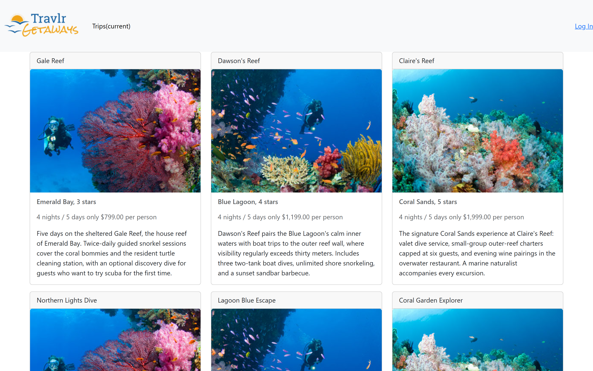
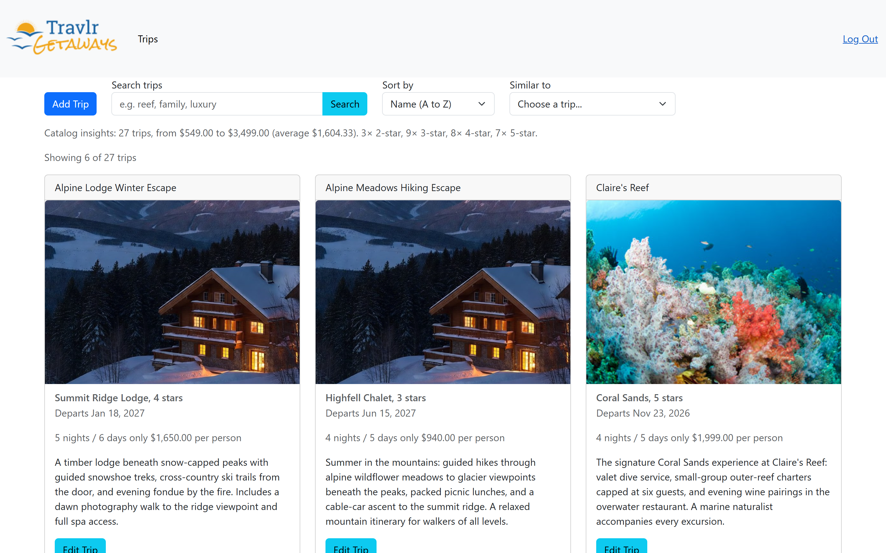
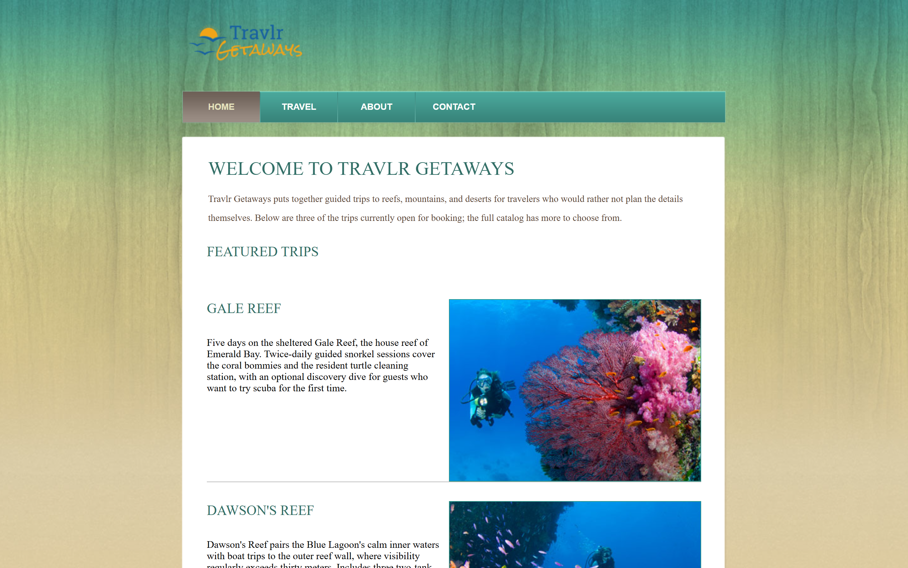
Enhancement Two: Algorithms and Data Structures
Added an algorithmic search and recommendation layer: stable merge sort implemented from scratch with a tested stability guarantee; field-weighted relevance search over tokenized queries with no user-derived regular expressions; cursor-based pagination that resumes deterministically as data changes; top-k recommendations pairing a hash-map index with a bounded min-heap for O(n log k) selection with IDF-weighted similarity; catalog expanded to 27 trips across four destination categories; verified by 36 backend Jest tests including integration tests against an in-memory MongoDB. A later polish pass added search suggestions backed by a documented trie (prefix tree) module (app_api/algorithms/trie.js) with O(prefix-length) lookup, ranking completions by the same field weights as relevance search (name 3, resort 2, description 1); the new public GET /api/trips/suggest endpoint feeds an autocomplete list under the search box, built on a native HTML datalist with a 250ms debounce.
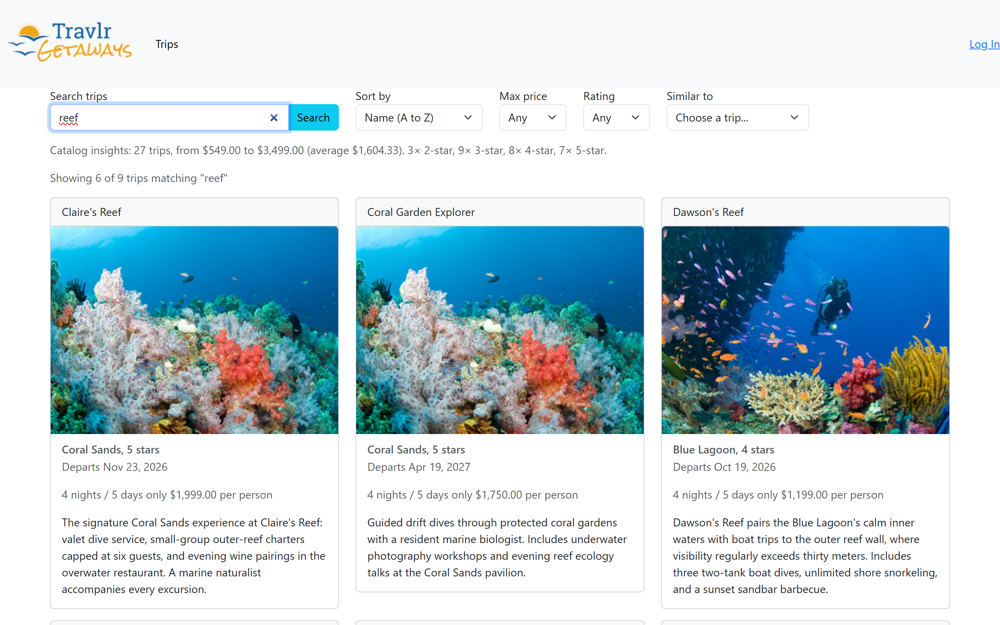
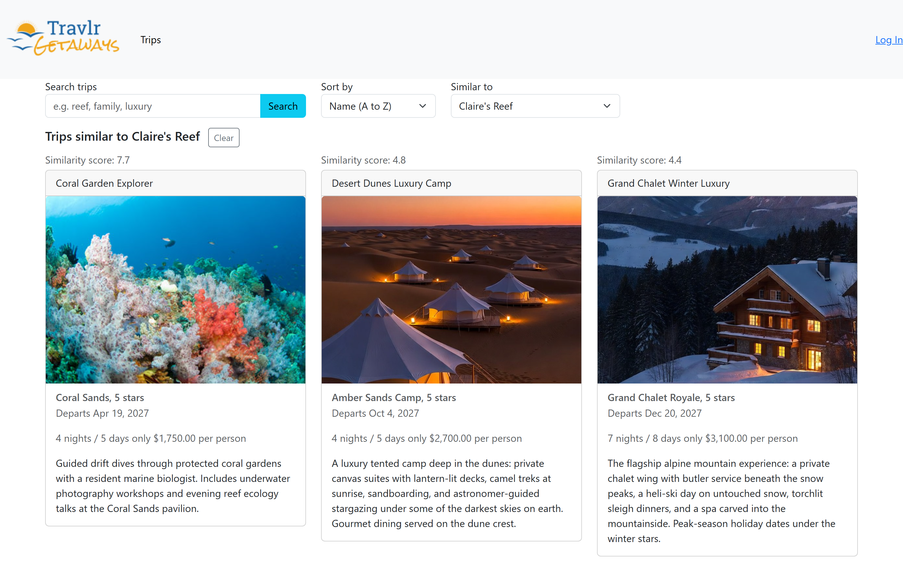
Enhancement Three: Databases
Moved the data layer onto database-side foundations: MongoDB aggregation pipeline behind an engine switch (?engine=db|app) with an automated parity test proving identical orderings; Mongoose schema validation (numeric prices with range checks, unique uppercase trip codes, image fields restricted to bare filenames); weighted full-text index (name ×3, resort ×2, description ×1) mirroring the application engine's weights; catalog statistics endpoint (GET /trips/stats); role-based access control restricting mutating routes to an admin JWT claim; NoSQL-injection sanitization middleware; CORS tightened to a single origin. A later polish pass moved price and star-rating filtering into the database itself: the aggregation pipeline now applies a $match on perPerson for the max-price filter and derives a star rating from the resort string with $addFields before matching it against the rating floor, with the identical logic mirrored in the application engine so the automated parity test now also proves the two engines identical under active filters; a new index on perPerson supports the price filter, and the interface gained Max price and Rating dropdown controls in the toolbar. Signed-in users can also rate any trip 1 to 5 stars from the trip cards; a unique compound database index enforces one rating per account per trip while still allowing a re-rating, and MongoDB aggregation computes the average and count shown as a "Community rating" line on the catalog cards and, read-only, on the customer Travel page.
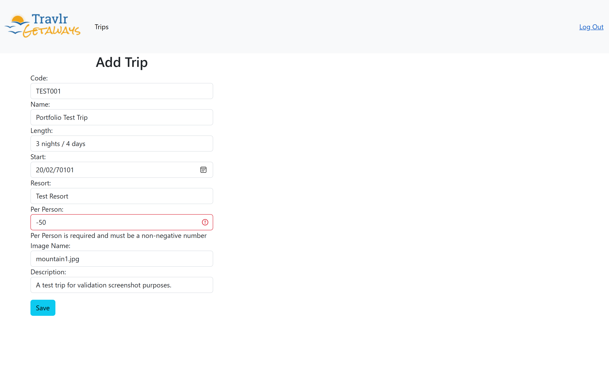
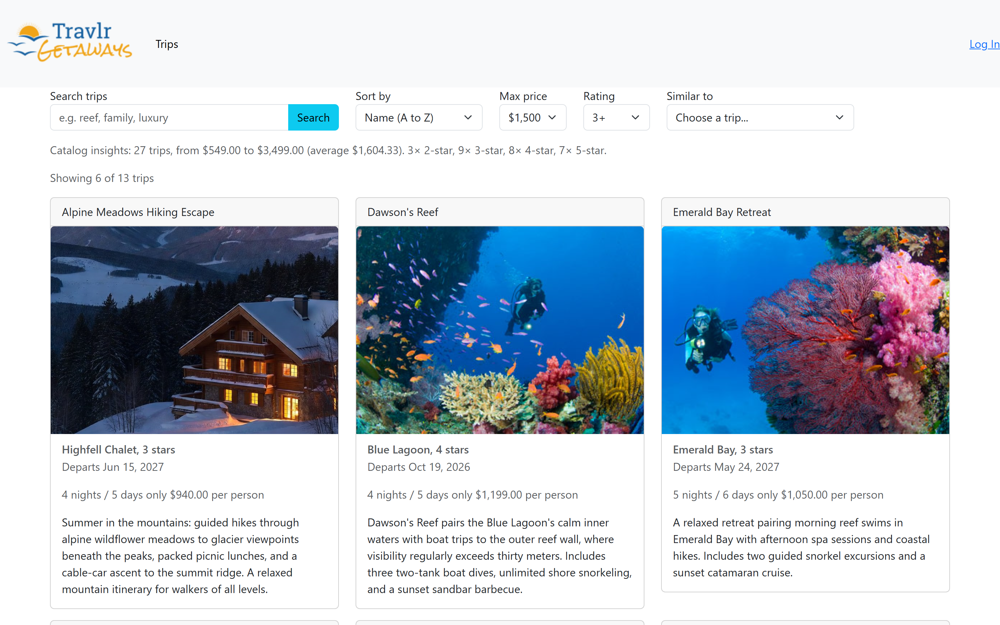
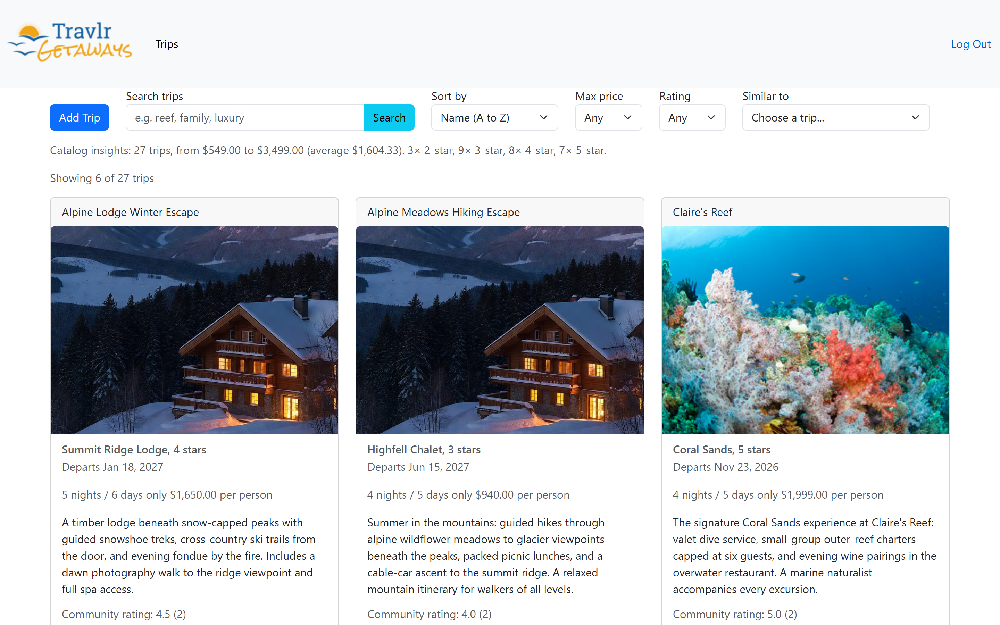
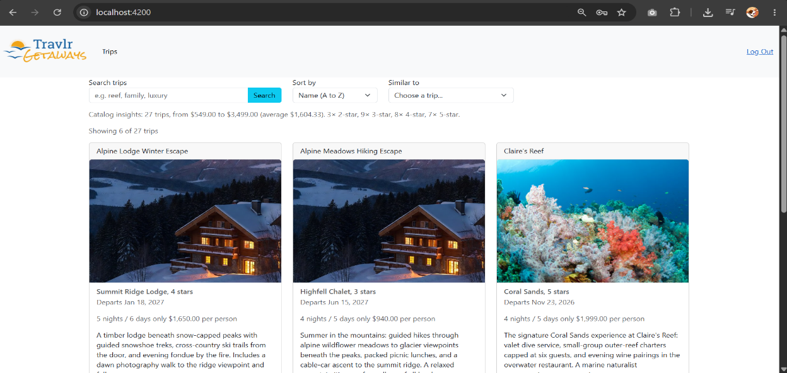
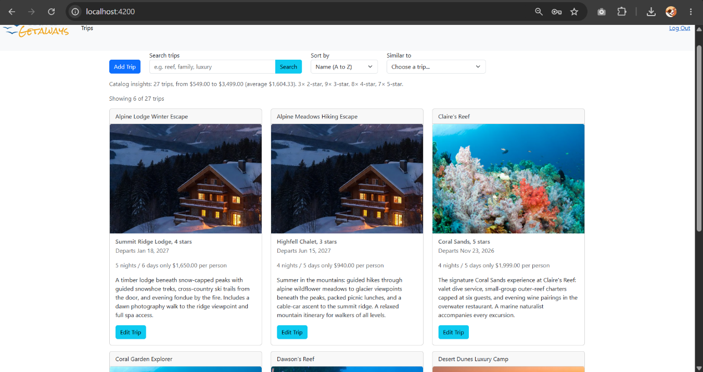
Final Polish Beyond the Graded Milestones
Each of the three graded milestones above was scored full marks; the final portfolio week added a further round of improvements in every area covered by the capstone.
- Software design and engineering: a two-command setup and run experience —
npm run setupandnpm run dev— that gets a fresh clone of the full stack installed, configured, seeded, and running with a single pair of commands. - Algorithms and data structures: trie-backed autocomplete suggestions with documented O(prefix-length) lookup, ranked by the same field weights as the relevance search.
- Databases: price and star-rating filters executed inside the MongoDB aggregation pipeline, mirrored exactly in the application engine, with the parity proof extended to cover both engines under active filters.
- Code review: closed captions added to the code review video for accessibility.
- Security and hygiene: secrets removed from all public code zips and the signing key rotated.
- Customer site: the server-rendered customer site was finished, with seven leftover placeholder template pages removed and a working, sanitized, database-backed Contact form added.
- Community trip ratings: signed-in users rate any trip 1 to 5 stars, one rating per account per trip, with averages and counts computed by MongoDB aggregation and shown on the catalog cards and the customer Travel page.
Together these changes grew test coverage from 74 to 121 automated tests across the backend and frontend.
💻 Download the final application (original and enhanced code) — the complete polished version including every improvement above. The three milestone zips in the sections above remain the versions submitted for grading.
Architecture
The diagram below was recommended by the course instructor and traces one authenticated query end to end.
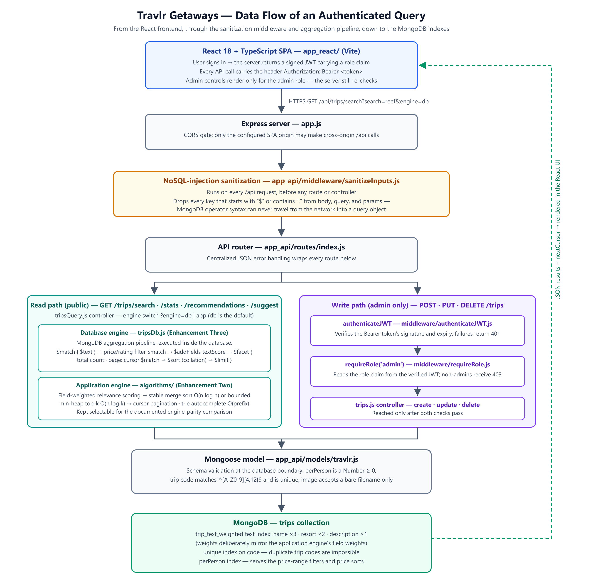
Code review → final code: alignment table
| # | Issue or plan stated in the code review | Delivered in the final code | Status |
|---|---|---|---|
| 1 | CORS wildcard (Access-Control-Allow-Origin: '*') lets any site call the API | app.js lines 33-45 — origin now comes from ALLOWED_ORIGIN env var (default http://localhost:4200), no wildcard; comment explicitly ties the fix to the code-review finding | Delivered |
| 2 | DELETE /trips/:tripCode route has no authenticateJWT, so anyone can delete trips | app_api/routes/index.js — .delete(requireAdmin, tripsController.tripsDeleteTrip), requireAdmin = [authenticateJWT, requireRole('admin')] | Delivered |
| 3 | Bug: res.json(err) references an err variable never defined in the function (lines 21, 45, 78, 119 of old trips.js), which would crash the server | app_api/controllers/trips.js — every handler wrapped in asyncHandler (app_api/middleware/asyncHandler.js); errors are thrown as ApiError and resolved centrally, no undefined-variable path remains | Delivered |
| 4 | tripsAddTrip takes every field straight from req.body with no validation, allowing bad/dangerous data into the DB | app_api/controllers/trips.js tripsAddTrip/tripsUpdateTrip rely on Mongoose schema validation (app_api/models/travlr.js) — a ValidationError is thrown and translated to HTTP 400 by the error handler | Delivered |
| 5 | Lack of documentation: comments describe what an endpoint does but not data formats or error behavior | app_api/controllers/trips.js, tripsQuery.js, tripsDb.js, all app_api/middleware/*.js, and app_api/models/*.js carry file-level and function-level comments explaining data shape, validation rules, and error/complexity behavior | Delivered |
| 6 | Enhancement: rebuild the Angular admin panel in React + TypeScript, mapping signals/reactive forms/trip-data service to useState/useEffect, controlled forms, and an Axios module with interceptors | app_react/ — package.json lists react@18.3.1; src/pages/TripListing.tsx uses useState/useEffect/useCallback; src/pages/AddTrip.tsx and EditTrip.tsx use controlled form state; src/api/client.ts is an Axios instance with request/response interceptors that attach the bearer token and clear it on 401, explicitly documented as replacing TripDataService + JwtInterceptor | Delivered |
| 7 | Enhancement: fix the Express backend with proper error handling and a central error-handling place | app_api/middleware/errorHandler.js (ApiError, notFoundHandler, errorHandler) and app_api/middleware/asyncHandler.js, wired into app_api/routes/index.js (router.use(notFoundHandler); router.use(errorHandler);) | Delivered |
| 8 | Enhancement: add clear comments throughout the code | Confirmed across app_api/controllers/*.js, app_api/middleware/*.js, app_api/algorithms/*.js, and app_api/models/*.js — every file opens with a rationale comment and functions carry explanatory/complexity notes | Delivered |
| 9 | Enhancement: add automated tests | app_api/__tests__/database.integration.test.js, app_api/__tests__/endpoints.integration.test.js, app_api/algorithms/__tests__/algorithms.test.js (mergeSort, BoundedMinHeap, relevance scoring, cursors), and app_react/src/__tests__/ (TripCard.test.tsx, TripForm.test.tsx, TripListing.test.tsx, token-storage.test.ts) | Delivered |
| 10 | Issue: no search, sort, filter, or pagination — Model.find({}) loads the entire collection every time | Superseded by app_api/controllers/tripsQuery.js (tripsSearch) and app_api/controllers/tripsDb.js (runDbSearch), both of which support search, sort, and cursor pagination | Delivered |
| 11 | Issue: frontend getTrips() sends a plain GET with no search/sort/page params | app_react/src/api/trip-api.ts and app_react/src/pages/TripListing.tsx build query params (search, sortBy, order, limit, cursor) against /api/trips/search | Delivered |
| 12 | Issue: no optimized data structures for search/ranking; would need to scan every trip one by one for a price filter | app_api/algorithms/minHeap.js (bounded min-heap for top-k) and app_api/algorithms/relevance.js (scoring/IDF) provide the missing structures; tripsDb.js additionally pushes ranking into MongoDB's text index | Delivered |
| 13 | Enhancement: merge sort for sorting trips by price, length, or date (O(n log n)) | app_api/algorithms/mergeSort.js — stable, recursive merge sort with documented O(n log n) time / O(n) space; used by tripsQuery.js's application engine (sortBy supports price, start, name, relevance) | Delivered |
| 14 | Enhancement: search where a name match ranks higher than a description-only match | app_api/algorithms/relevance.js scoreTripAgainstQuery — weights name 3, resort 2, description 1, plus a prefix-match bonus | Delivered |
| 15 | Enhancement: pagination, e.g. 10 trips per page instead of loading everything | app_api/algorithms/cursor.js (encodeCursor/decodeCursor) plus cursor-based paging logic in both tripsQuery.js and tripsDb.js (DEFAULT_LIMIT/MAX_LIMIT, nextCursor) | Delivered |
| 16 | Enhancement: recommendation feature using a hash map for preference lookups and a priority queue (min-heap) to keep the top 5 matches, O(n log k) | app_api/controllers/tripsQuery.js tripsRecommendations — builds a Map (byCode) for O(1) lookup and uses BoundedMinHeap (app_api/algorithms/minHeap.js) sized to k for O(n log k) top-k selection | Delivered |
| 17 | perPerson field is typed String, so prices can't be summed, averaged, or sorted numerically | app_api/models/travlr.js — perPerson: { type: Number, required: ..., min: 0, max: 1000000 }; comment explicitly cites the code-review finding | Delivered |
| 18 | Issue: user schema has no role field, so every logged-in user has equal access | app_api/models/user.js — role: { type: String, enum: ['user', 'admin'], default: 'user' }, embedded in the JWT via generateJWT | Delivered |
| 19 | Issue: no input validation/sanitization on trip creation — described in the script as a NoSQL injection vulnerability | app_api/middleware/sanitizeInputs.js strips any key starting with $ or containing . from req.body/req.params/req.query; wired globally for /api in app.js (app.use('/api', sanitizeInputs)) | Delivered |
| 20 | Issue: database queries use only basic CRUD — no aggregation, no text search indexes, no optimized multi-field indexes | app_api/controllers/tripsDb.js runCatalogStats/runDbSearch use $facet, $group, $bucket, $text; app_api/models/travlr.js adds a weighted text index (trip_text_weighted) and a unique index on code | Delivered |
| 21 | Enhancement: aggregation pipelines for stats like average price per destination / trip counts per resort | app_api/controllers/tripsDb.js runCatalogStats — $group computes avgPrice/minPrice/maxPrice/count by star rating and overall, plus $bucket price bands; exposed via GET /api/trips/stats (tripsQuery.js tripsStats, routed in app_api/routes/index.js) | Delivered |
| 22 | Enhancement: fix the trip model — perPerson to Number, plus validation (name length limit, positive price) | app_api/models/travlr.js — perPerson is Number with min/max; name has maxlength: 120; code, resort, description, image all carry maxlength/match validators | Delivered |
| 23 | Enhancement: text search indexes over trip names and descriptions | app_api/models/travlr.js — tripSchema.index({ name: 'text', resort: 'text', description: 'text' }, { weights: { name: 3, resort: 2, description: 1 }, name: 'trip_text_weighted' }), used by tripsDb.js's $text search stage | Delivered |
| 24 | Enhancement: role-based access control — admins can create/edit/delete, regular users can only view | app_api/middleware/requireRole.js combined with authenticateJWT as requireAdmin in app_api/routes/index.js; applied to POST/PUT/DELETE /trips routes while GET routes stay public | Delivered |
| 25 | Enhancement: input sanitization to prevent NoSQL injection by stripping $-prefixed/dotted operator keys before they reach a query | app_api/middleware/sanitizeInputs.js — sanitizeValue recursively drops any key starting with $ or containing . from body/params/query before the request reaches any controller | Delivered |